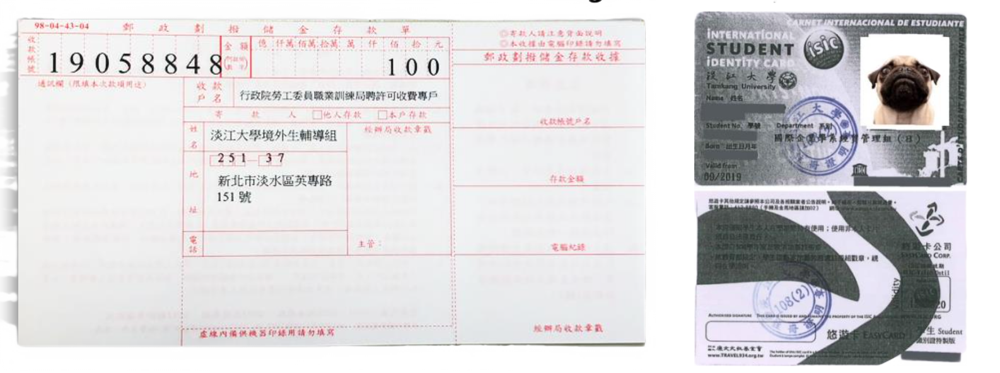
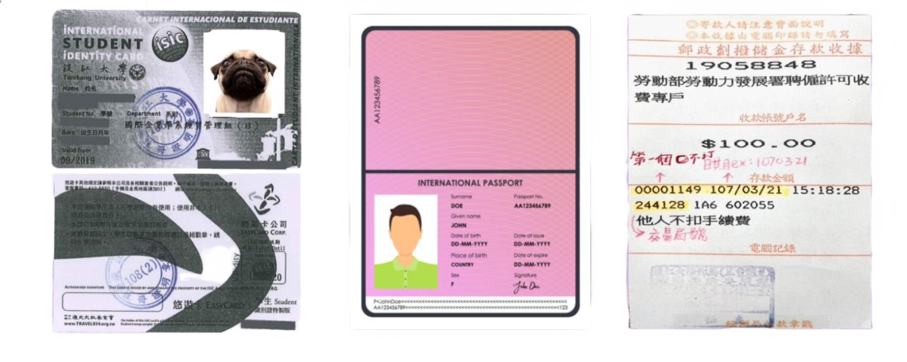
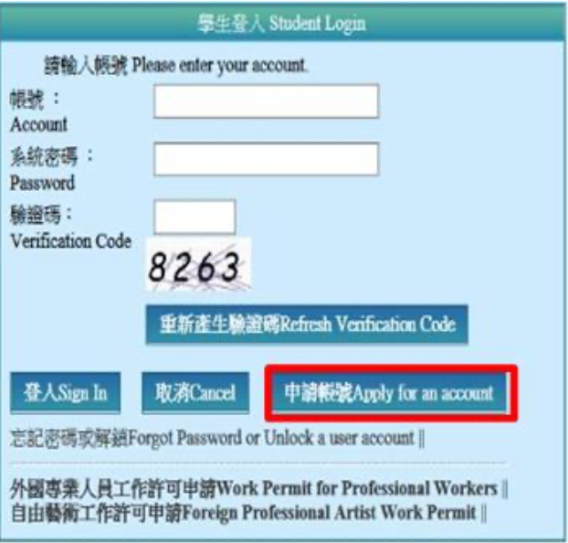
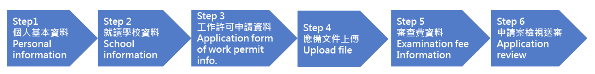
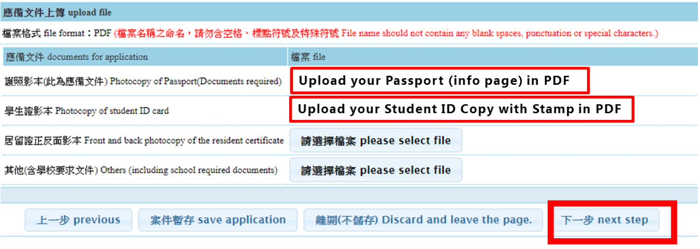
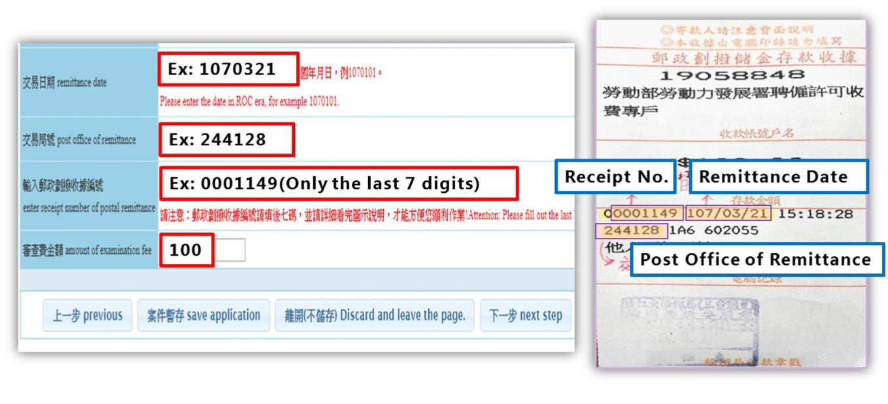
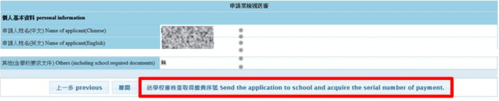

International students who wish to work in Taiwan are required to apply for a work permit before working.
Please note that if you hold a job without applying for a work permit, you may be fined NTD 30,000 to NTD 150,000 and requested to leave the country immediately!
Work Permit Validity: Maximum of six months only.
Those with valid permits can only work during the school semester and cannot work after graduation or during the summer break after graduation.
Before Applying Online
- Get payment slip at TK001, and pay NTD100 at Post Office.
- Copy your student ID (front and back), and get the stamp from A Building.

Required Documents
- Copy of student ID (with Stamp) [PDF]
- Passport [PDF]
- Payment receipt

Click "Apply for an account" and read the relevant regulations and laws.
- The account number must contain both English letters and numbers.
- The password must be at least 8 digits long and must contain English letters, numbers, and special symbols.
-
The part of identity:
- For bachelor degree students, please select Overseas Chinese/Foreign students 4-year universities.
- For master degree students, please select Overseas Chinese/Foreign Students - Master.

Step 1: Personal Information
Enter your personal information accurately:

Click "Next Step" to proceed to the next step after saving your application.
Step 4: Upload File
Please upload scanned PDFs of the following:
- (1) Passport
- (2) Student ID (front and back) with a stamp from A Building

After selecting the required files, click "Next Step" to continue.
Step 5: Examination Fee Information
Payment by post office:Take the postal transfer slip to the post office for payment first.Fill in the form according to the information on the receipt.

Use the following example format:
- Transaction Date: Enter the date in ROC format (e.g., 107/03/21).
- Post Office Code: Enter the provided post office code (e.g., 244128).
- Receipt Number: Enter only the last 7 digits (e.g., 0001149).
- Examination Fee: Input the amount (e.g., 100).
Step 6: Application Review
Please double-check that all the information is filled in correctly and uploaded, then click
"Send to school for review" to complete the application.

7. Check Work Permit Arrival
After 7 days of application or once you receive the mail, scan the QR Code below to check the arrival date of your work permit.
8. Important Notes
The application materials can only be temporarily stored for seven days before being sent to the school for review. If they are not sent within this period, the system will delete your application materials.
If you encounter any problems in the operation of the system, report them immediately and ask for assistance. If the time limit for the work permit application is delayed, you will be responsible for any resulting issues.
9. Contact Information
Workforce Development Agency
- Tel: (02) 8995-6000
- Address: 10042 台北市中正區中華路一段39號10樓
- Website: www.wda.gov.tw
- Email: wda@wda.gov.tw
- Service Hours: Monday - Friday 8:30 AM - 12:30 PM; 1:30 PM - 5:30 PM